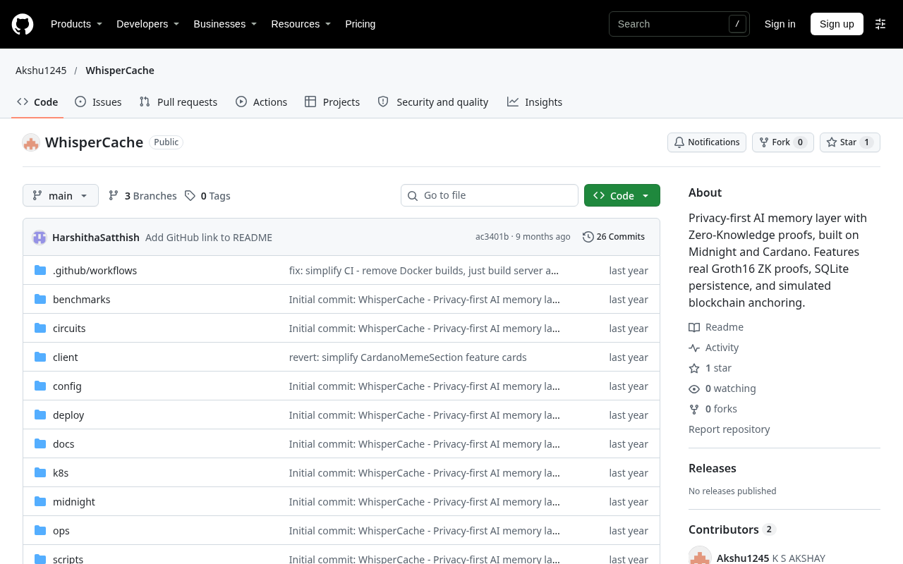

CASE FILE / 03 · TEAM HACKATHON
WhisperCache
Exploring memory without revealing raw text.
An experimental encrypted-memory design with zero-knowledge proof components.

THE PREMISE
What I wanted to solve
A personal assistant can become dependent on sensitive memories. The project experiments with how a workflow might verify statements without giving every downstream component the raw content.
THE BUILD
How it works
WhisperCache explores client-side memory encryption and proof-based queries for AI workflows. It was built for a hackathon privacy track and should be understood as a technical prototype, not an audited privacy service.
THE WALKTHROUGH
Follow the flow
Encrypt
Transform input into local encrypted material.
Prepare
Construct a proof input representing the narrow fact being checked.
Demonstrate
Run the prototype proof-generation and verification components.
Discuss
Identify what was simulated and what would need real deployment and review.
IN THE REPOSITORY
What you can inspect
- Client-side authenticated encryption components described in the repository.
- Poseidon and Groth16 proof-generation code and demonstration paths.
- A sample client/server workflow for memory-related queries.
- A simulated blockchain anchoring path used for the hackathon walkthrough.
BE HONEST ABOUT IT
Limitations and open questions
- A hackathon demonstration is not a formal security or privacy audit.
- The blockchain anchoring path is simulated.
- No claim is made that an actual AI provider could never access data in every configuration.
This case file explains published work, not an independent security certification.